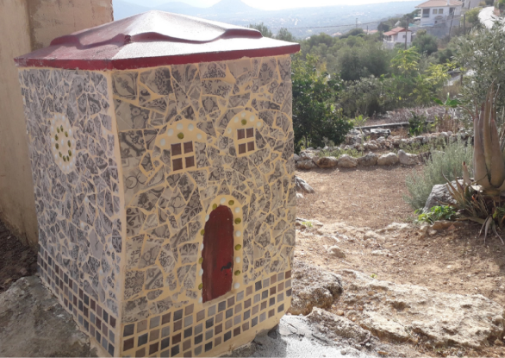
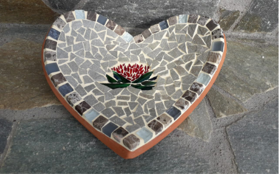
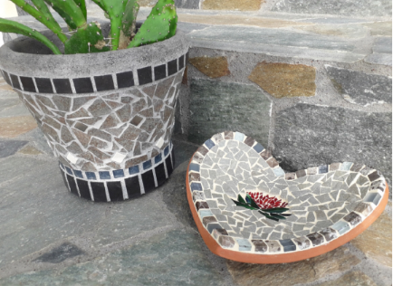

Contact: Phone +30 6974794938 / +30 26710 23929
Address: Vandorou, 8 - 28100 Argostoli, Kefalonia
e-mail: lithostrotoart@gmail.com
Participants: Georgia Theodoropoulou, Valeria Kechaidou,
George Kotrotsios, Iro Kalliga and Paraskeui Kroussou
Services: Cultural Education Services (seminars, workshops),
Cultural Events Management, Cultural Tourism Services, Mosaic Art
Production, Fine Art Production, Art and Craft Creations.



Target: Our main goal is to facilitate the production and
distribution of cultural goods while satisfying the interests and
needs of the local community of Kefalonia. For the purpose of
maintaining team work and social cohesion, seminars, workshops and
educational activities for all ages will be organised and artist
residencies will be offered. We want to build an artistic network
that will support local art workers and enhance international
collaboration in line with the principles of sustainable economics
and alternative tourism development.
As far as our mosaic work is concerned, we will organise workshops,
educational programmes and seminars on the history and evolution of
mosaic art and help new artists to design and create mosaic
artworks. Mosaics have a long tradition on the island of Kefalonia,
dating back to Roman times, and, because of its aesthetic, social
and historical value, engagement with this art form can serve not
only to influence local artistic production but also to improve
cohesion in the local community. The artists will use traditional
mosaic techniques and take account of contemporary trends in the
field in order to create authentic new works by combining methods
and materials, thus offering a new perspective on this ancient art
form. We intend to design and create works of art which can decorate
commercial or private residential spaces, but what excites us most
is incorporating mosaic art into public environments, as outdoor
mosaic projects can transform crowded public areas into creative
dialogue platforms.
About us: Lithostroto is a
new creative hub, a cultural cooperative located in Argostoli,
Kefalonia. The main goal of our start-up is to encourage artistic
expression in any form and in any way possible! We will engage
mostly with the art of mosaics, but we are more than eager to
support all kinds of cultural events, exhibitions and educational
projects, all of which can be planned, staged and managed by our
team!